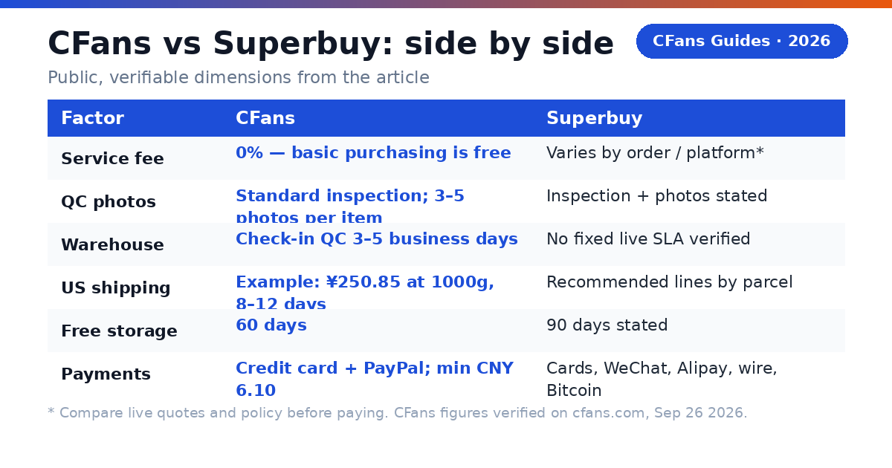
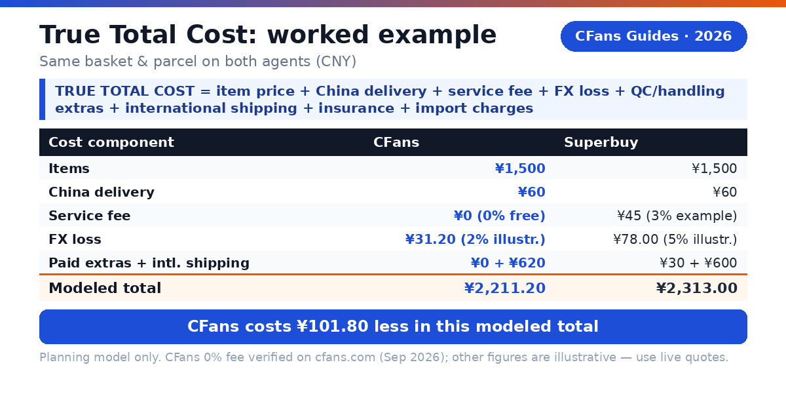
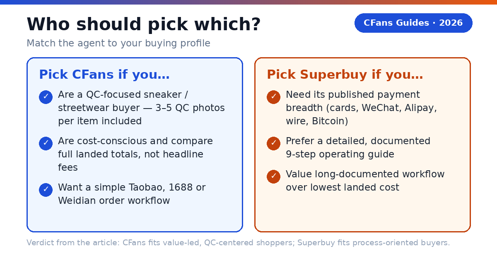

CFans (cfans.com) is a buying agent for Taobao, 1688 and Weidian that helps international shoppers place Chinese marketplace orders, inspect items at a warehouse, combine purchases and ship them abroad. Superbuy offers the same core agent model and publishes a detailed step-by-step buying and parcel-submission guide.
This comparison is for shoppers who already understand why they need an agent and are deciding where to place a real order. It compares public, verifiable dimensions: fees, foreign-exchange (FX) conversion, quality-control (QC) photos, warehouse handling, delivery choices, storage, payments, support and usability. It does not rank either company on unverifiable claims or isolated anecdotes.
What is the practical difference between CFans and Superbuy?
Both platforms solve the same cross-border problem: a shopper finds an item on a Chinese marketplace, the agent buys or forwards it, a domestic seller sends it to the agent's warehouse, the warehouse checks and stores it, and the agent consolidates selected items for international shipment.
What is CFans best positioned for?
CFans is positioned as a streamlined, value-led option. According to CFans' public service description, users can submit product links, receive three to five standard inspection photos, store items, consolidate purchases and choose among international shipping lines. Verified against cfans.com's public pages and logged-in session on September 26, 2026: basic purchasing service is Free (0% service fee); standard quality inspection includes 3–5 photos per item by category; the order-response SLA is 09:00–18:00 → response within 6 hours, 18:00–09:00 → processed by next day 14:00, and purchase is completed within 24 hours after payment; free warehouse storage runs 60 days from “Warehouse In” (renew 10 RMB for +30 days; unclaimed after 60 days = abandoned/destroyed). Domestic arrival → warehouse check-in QC takes 3–5 business days.
Verify every live figure against current policy before publishing.
What is Superbuy best positioned for?
Superbuy publishes a detailed nine-step journey covering product selection, payment, purchasing, inspection, storage, parcel submission, freight deposit, delivery and review. Its guide lists multiple currencies and payment methods, and states that users receive inspection photos and 90 days of free storage. Exact fees and included services can vary by marketplace and order type.
How do CFans and Superbuy compare side by side?

| Decision factor | CFans | Superbuy |
|---|---|---|
| Service fee | 0% — basic purchasing service is Free | Varies by order/platform* |
| FX conversion loss | Measure at payment* | Measure at payment* |
| QC photos | Standard inspection; 3–5 photos per item | Inspection + photos stated |
| Warehouse processing | Order-response SLA published; warehouse check-in QC 3–5 business days | No fixed live SLA verified |
| Shipping options | 1000g examples: USA ¥250.85 (8–12d), UK ¥162.40 (9–12d), Germany ¥171.10 (8–13d)* | Recommended lines by parcel |
| Premium delivery | USA 8–12d, UK 9–12d, Germany 8–13d (1000g examples, logged-in tool) | Route quote governs* |
| Free storage | 60 days from “Warehouse In” | 90 days stated |
| Payments | Credit Card (2 channels) + PayPal; min top-up CNY 6.10/channel* | Cards, WeChat, Alipay, debit, wire, Bitcoin stated |
| Support | Help/contact channels | Enquiry, email/message, hotline |
| UX | Streamlined agent flow | Detailed nine-step guide |
| Best for | Value + routine QC | Guided process + payment breadth |
FX conversion loss and payment/top-up surcharges are not published on cfans.com; per-0.5kg step pricing beyond the 1000g examples is also unverified. Verified against cfans.com on September 26, 2026 (public pages + logged-in session): basic purchasing service = Free (0% service fee); standard quality inspection with 3–5 photos per item; order-response SLA (09:00–18:00 → response within 6 hours; 18:00–09:00 → processed by next day 14:00; purchase within 24 hours after payment); warehouse check-in QC 3–5 business days after domestic arrival; 60-day free storage from “Warehouse In” (renew 10 RMB for +30 days; unclaimed after 60 days = abandoned/destroyed); example shipping quotes at 1000g from the logged-in estimation tool — USA line ¥250.85 (8–12 days), UK line ¥162.40 (9–12 days), Germany line ¥171.10 (8–13 days); actual quotes vary ±5–10% and by weight/line, not a fixed price list. A fee or delivery range is not a guarantee. Superbuy's official self-service page says some third-party-platform orders may incur additional service fees after staff verification.
What is the CFans True Total Cost formula?
The headline service fee is only one layer. A fair agent comparison must convert every cost into the buyer's payment currency and include charges that appear before purchase, at warehouse handling and at international dispatch.

For a clean head-to-head decision, hold the item basket, delivery country, declared parcel dimensions, insurance choice and shipping-service level constant. Then compare only the amounts that differ by agent.
How do you measure FX conversion loss?
At the moment of payment, record the platform's CNY price and the amount charged in your card or wallet currency. Compare that effective exchange rate with a neutral mid-market reference taken at the same time. The difference, after separating any explicit card or payment-processor fee, is the FX conversion loss.
Can a worked example reveal the cheaper agent?
Yes - but the numbers must be treated as a planning model, not as current quotes. Assume the same basket and parcel are eligible on both platforms:

| Example input | CFans | Superbuy |
|---|---|---|
| Items | ¥1,500 | ¥1,500 |
| China delivery | ¥60 | ¥60 |
| Service fee | 0% (free) = ¥0 | Example 3% = ¥45 |
| FX loss | Illustrative 2% = ¥31.20 | Illustrative 5% = ¥78.00 |
| Paid extras | ¥0 | Example ¥30 |
| Intl. shipping | Example ¥620 | Example ¥600 |
| Modeled total | ¥2,211.20 | ¥2,313.00 |
Arithmetic: CFans = 1,500 + 60 + 0 + 31.20 + 0 + 620 = ¥2,211.20. Superbuy = 1,500 + 60 + 45 + 78 + 30 + 600 = ¥2,313.00. In this hypothetical case, CFans costs ¥101.80 less in the modeled total; note its service fee is the verified 0%, while the FX spreads and freight figures remain illustrative.
Which agent offers the better QC process?
What does CFans include for QC?
CFans' Help Center describes standard quality inspection: screening prohibited items and verifying style, quantity, color, size, model, damage, stains and defects, with 3–5 standard inspection photos per item depending on product category; the defect standard is diameter ≥0.5cm or length ≥1cm (verified via cfans.com's logged-in session, September 26, 2026). Paid upgrades: HD custom photos at 1.5 RMB/photo (24h) and video QC at 35 RMB/item (20–90s). Buyers should still verify eligible categories, reshoot fees, the return window and whether measurements or close-ups cost extra.

What does Superbuy document for QC?
Superbuy's official novice guide states that items receive inspection and photos after warehouse arrival, with contact if problems are found. The guide also says 1688 purchases follow a different quality-control standard. An older official guidance page describes three photos and 90-day storage, but the current included-photo count and detailed-photo fees should be confirmed before publishing.
What can QC photos actually prove?
Warehouse photos can reveal color, obvious defects, label details, visible construction and measurements when requested. They do not prove authenticity, material performance, long-term durability or fit on the buyer. For sneakers and streetwear, ask for outsole, size tag, stitching, logos, symmetry and insole measurements before the return window closes.
Which agent ships faster and offers better route choice?
Neither agent can be called universally faster. Delivery depends on destination, carrier, customs, peak season, restricted-item rules, handoff delays and whether billing uses actual or volumetric weight. Compare equivalent service tiers - premium air with premium air, not premium air with an economy postal line.
What does CFans say about delivery?
CFans' logged-in estimation tool (September 2026) quotes example transits at 1000g: USA line 8–12 days (¥250.85), UK line 9–12 days (¥162.40), Germany line 8–13 days (¥171.10) — example quotes, actual quotes vary ±5–10% and by weight/line, not a fixed price list. Treat any third-party range as an estimate that starts after parcel dispatch, not after the marketplace order is placed. Add seller-to-warehouse time, warehouse processing (domestic arrival → warehouse check-in QC takes 3–5 business days), parcel rehearsal or packing, and any pre-dispatch queue.
What does Superbuy's published process say?
Superbuy lets users select recommended routes after items enter the warehouse, pay an estimated freight deposit and receive a refund to their Superbuy account if the verified shipping charge is lower. Its self-service page states that some parcels are billed on the greater of actual and volumetric weight and gives a route-specific formula of length x width x height / 6,000.
- Compare the same packed dimensions. Package removal can change volumetric cost.
- Read line restrictions. Batteries, liquids and branded goods may have fewer options.
- Separate dispatch from delivery. A fast line cannot compensate for a long pre-dispatch delay.
Which buying agent is easier for a first order?
The core flow is similar on both services: paste a marketplace link, select variants, pay for the item and China delivery, wait for warehouse arrival, review QC, select items for consolidation, choose an international route and pay freight.
Why might a beginner prefer CFans?
CFans concentrates the journey around link submission, warehouse QC, storage, consolidation and global shipping. That direct flow can reduce decision fatigue for someone who mainly wants to move a Taobao, 1688 or Weidian item into one international parcel.
Best habit: start with one inexpensive, unrestricted item and complete the whole cycle before building a large haul.
Why might a beginner prefer Superbuy?
Superbuy's public novice guide breaks the process into nine explicit steps. It says its system can capture product information for most Taobao, Tmall and JD.com links and also offers manual order entry when automatic retrieval fails.
Best habit: screenshot the item variant, seller terms, warehouse weight and final route quote.
Interface preference is subjective, and both websites can change. A clean test is to paste the same product link into both, inspect the translated options, preview the checkout and see which platform communicates restrictions and charges more clearly.
Which agent provides more responsive customer support?
Public pages can verify that support exists, but they cannot prove a universal response-time winner. Queue length, language, issue complexity, holidays and the seller's own responsiveness all affect the outcome. A fair comparison uses the same pre-sale question, sent during published service hours, and records the time to a complete answer.
What support evidence is publicly available?
- CFans: its public navigation lists a Help Center and Contact Us, and its service copy says it assists with purchasing and resolving issues. Confirm current channels, hours and escalation paths live.
- Superbuy: its guide says buyers can use order enquiry and receive messages or email during purchasing. The guide also publishes a Beijing-time service hotline.
How should a buyer test support before committing?
- Ask whether the exact item category is accepted.
- Ask which return deadline applies after QC photos arrive.
- Ask for a route restriction explanation for the destination.
- Judge answer completeness, not only first-response speed.
Who should pick CFans - and who should pick Superbuy?
Pick CFans if you are a QC-focused sneaker or streetwear buyer
CFans' standard quality inspection with 3–5 photos per item (verified on cfans.com, September 26, 2026) makes it attractive when visual checks are central to the purchase. Confirm the angles, measurement options and return window before ordering.

Pick CFans if you are cost-conscious and compare landed totals
Use the CFans True Total Cost formula and a live route quote. CFans earns the order when included QC and the measured FX, fees and freight produce the lower like-for-like total.
Pick CFans if you want a simple Taobao, 1688 or Weidian workflow
The platform's value is clearest for shoppers who already have product links and want purchasing, warehouse handling, consolidation and international shipping in one service.
Pick Superbuy if published payment breadth is decisive
Superbuy's official guide lists credit cards, WeChat, Alipay, Chinese debit cards, bank telegraphic transfer and Bitcoin. Confirm which methods remain available for your country, currency and transaction at checkout.
Pick Superbuy if you value a detailed public operating guide
Its nine-step guide explains the order-to-delivery sequence, 90-day free storage and freight-deposit reconciliation. That documentation can reduce uncertainty for process-oriented buyers.
How can you compare both agents without risking a full haul?
- Build one identical test basket. Use the same marketplace link, variant, quantity and seller.
- Record the live item-stage quote. Capture product price, domestic delivery, service fee, payment fee and the effective FX rate.
- Check excluded items. Confirm route restrictions before the seller ships to the warehouse.
- Measure QC value. Compare included angles, image clarity, reshoot price and return deadline.
- Create an equivalent parcel. Use the same actual weight, dimensions, packaging request, insurance and destination.
- Compare like-for-like routes. Match delivery tier, duty treatment, tracking and compensation terms.
- Calculate the true total. Do not subtract coupons unless both are available to the same buyer at the same time.
- Ship the small test first. Evaluate handling, tracking and support before moving a high-value order.
What do shoppers ask most about CFans vs Superbuy?
Which is cheaper overall: CFans or Superbuy?
There is no permanent winner because FX spreads, payment charges, routes and coupons change. CFans is likely to appeal to value-focused buyers, but the defensible answer is the lower live CFans True Total Cost for the same basket and parcel.
Which has better QC photos?
CFans' public Help Center describes standard quality inspection with 3–5 photos per item by category (verified on cfans.com, September 26, 2026). Superbuy documents inspection and photos; verify the current included count, detailed-photo price and category rules on both services.
Which ships faster to the United States?
The selected line, dispatch queue, customs and final-mile carrier determine speed more than the agent name. CFans' logged-in estimation tool (September 2026) quotes example transits at 1000g: USA line 8–12 days, UK line 9–12 days, Germany line 8–13 days (actual quotes vary ±5–10% and by weight/line, not a fixed price list); compare a live CFans quote with the equivalent Superbuy service tier for the exact parcel.
Can I use both CFans and Superbuy?
Yes. You can test different orders or categories with each platform. Avoid splitting one time-sensitive outfit or set across agents unless you accept separate parcels, fees and arrival dates.
How do you switch agents safely?
How do I switch from Superbuy to CFans?
Finish, return or ship any items already held in the original warehouse unless a formal domestic warehouse-transfer option is confirmed. For new orders, copy the original marketplace links into CFans, reselect every variant, confirm restrictions and start with a small test purchase. Do not assume wallet balances, coupons or after-sales rights transfer.
Is CFans legit compared with Superbuy?
CFans operates the standard buying-agent workflow: order assistance, warehouse receipt, QC, storage, consolidation and international shipping. Legitimacy does not remove transaction risk, so verify the current legal entity and contact details, use protected payment where available, read compensation terms and test with a low-value order.
Does either agent guarantee product authenticity?
No public evidence reviewed for this comparison supports treating warehouse QC as professional authentication. The seller supplies the product; agent photos help the buyer inspect visible details. Avoid counterfeit or prohibited goods and follow destination-country law.
Should I choose based on a coupon?
Only after calculating the final cost. A welcome coupon may be limited by route, minimum spend, expiry or new-user status, while FX loss or shipping can outweigh the discount.